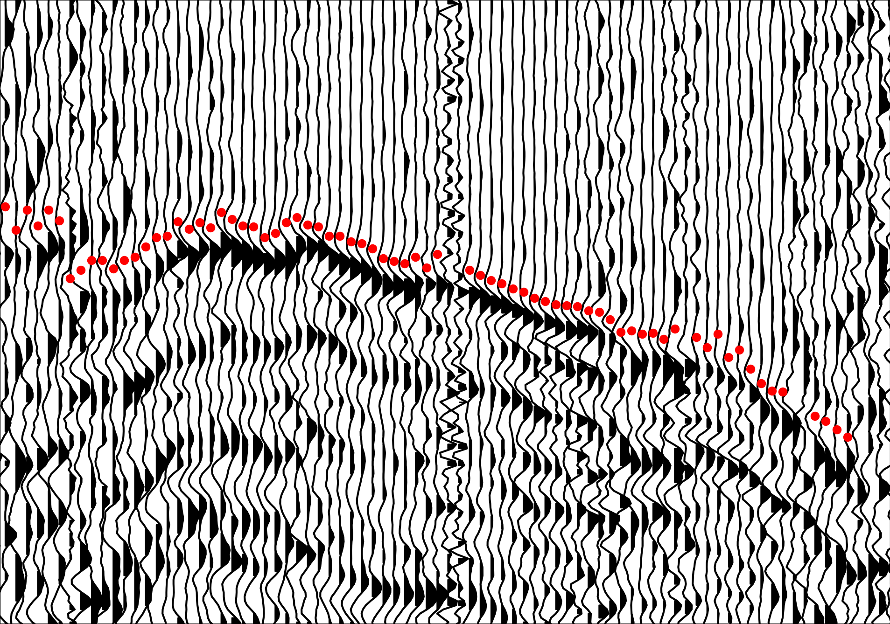
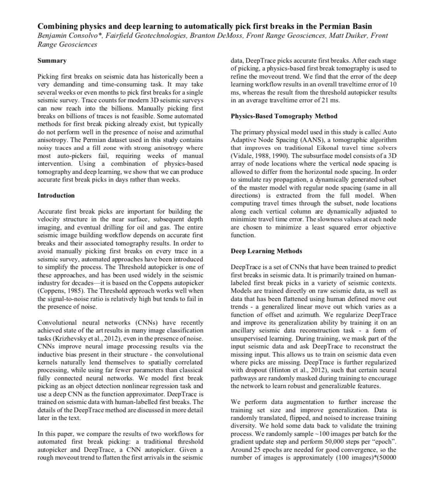
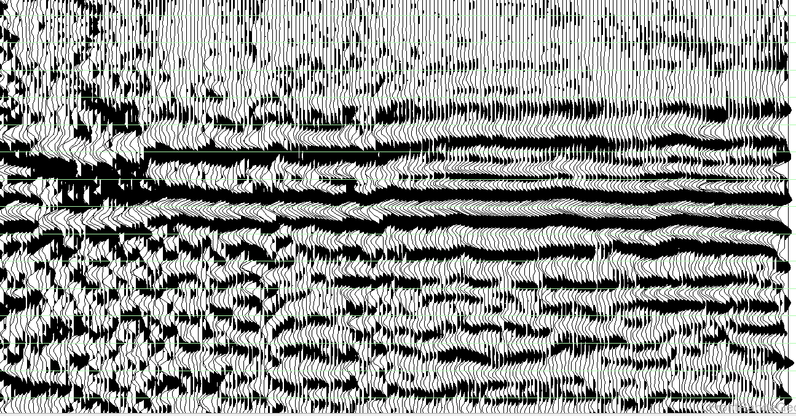

 First breaks identified by DeepTrace
DeepTrace is a breakthrough application of deep learning for picking arrival times in seismic data. Integrated with FRG’s Phoenix Refraction Statics program, DeepTrace can pick billions of traces per hour at human quality.
Users can further train DeepTrace on their historical data to continually refine DeepTrace’s picking abilities in diverse geophysical contexts.
Geophysicists often spend weeks manually picking and adjusting first breaks in seismic data to produce the highest-quality models. As surveys grow ever-larger in size, this process fails to scale and often becomes a bottleneck in the near-surface processing workflow.
DeepTrace is an AI that leverages modern breakthroughs in computer vision to finally enable automatic picking at human-quality. DeepTrace has been trained on terabytes of manually picked seismic data in a diverse set of geologic contexts and has learned how to pick first breaks “like a human would”. DeepTrace’s average disagreement with manual human picks is \(< 6ms\), approaching the resolution limit of most seismic data.
DeepTrace can pick in hours what humans take weeks, or in some cases months, to process. By scaling GPU compute resources with dataset size, any survey can be automatically picked by DeepTrace, freeing up valuable human time to explore more complex geophysical modeling decisions.
By its nature DeepTrace can continue to learn from new data sources - by training their own copy of DeepTrace on their historical data archives, processors can leverage decades of effort spent picking first breaks to produce DeepTrace models that out-perform humans in most contexts.
Read our case-study using Phoenix and DeepTrace to process a difficult survey produced in partnership with Fairfield here: 
We have also released results using Phoenix and DeepTrace to process a survey in partnership with Schlumberger. Download the presentation here (27MB).
We partnered with Lenovo at SEG 2019 to demonstrate how GPU compute accelerates neural networks like DeepTrace. You can find our presentation here:
DeepTrace’s key features include:
To request a demo of DeepTrace or enquire about pricing, please contact us.
Current DeepTrace users can find the documentation here. 